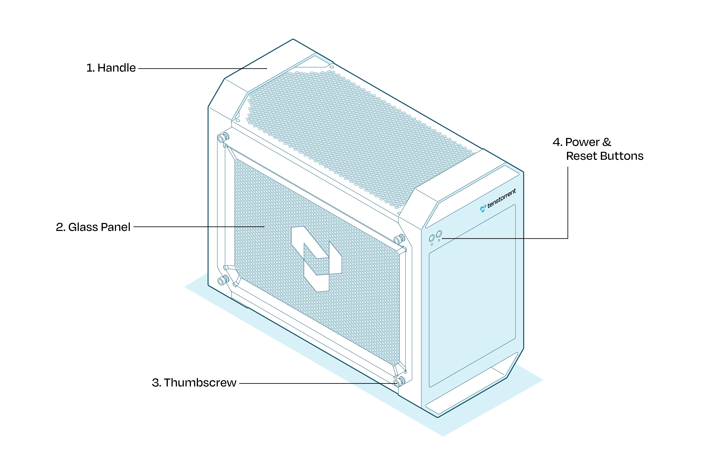

{kind=link}

Welcome to Your TT-QuietBox 2
You’ve powered it on. You’ve verified the chips. You’ve changed the default password and confirmed the accelerators are alive with the venerable tt-smi. The install guide got you here. This guide continues your adventure.
The TT-QuietBox 2 is yours. There are no API keys to manage, no requests-per-minute limits to negotiate, and no logs leaving your network on the way to inference. Whatever you run on it stays between you and the TT-QuietBox 2.
This guide walks through your machine, what it can do out of the box, and where to go deeper once you’re ready.
What Your Hardware Is and What It Can Do
The TT-QuietBox 2 houses two liquid-cooled Tenstorrent Blackhole™ cards, connected internally via a high-speed Samtec cable. Each card carries two Blackhole ASICs. Four chips total. Each chip has 120 Tensix cores — 480 across the system — and the cards together provide 128 GB of DDR6 memory at a combined memory bandwidth of over 2 TB/sec. The host side is a Ryzen 7 9700X with 256 GB of DDR5 system RAM and 4 TB of NVMe storage.
In practical terms: the TT-QuietBox 2 runs Qwen3-32B at roughly 8 seconds per response and Llama-3.3-70B at roughly 14 seconds per response. For video, it generates 5-second clips with Wan 2.2 in roughly 6 minutes after the server is warm — or 28-second clips via SkyReels-V2 for faster turnaround. For image, it handles FLUX.1-dev stills at quality that compares favorably to what you’d get from a cloud endpoint — without the round trip.
Monitoring It in Real Time
tt-toplike is a terminal hardware monitor built specifically for Tenstorrent silicon. It reads power, temperature, current, DDR training status, and ARC firmware health from the chips and drives a set of visualizations directly from that telemetry.
tt-toplike
By default it uses the sysfs backend — reading directly from the Linux hwmon kernel interface, which is completely non-invasive and safe to run while models are serving. Press v to cycle through visualization modes:
Normal — a live telemetry table with color-coded power and temperature readings. We try to tell you what’s running on your chips too
Starfield — Tensix cores rendered as stars; brightness follows power draw, color follows temperature, twinkle rate follows current
Memory Castle — a roguelike dungeon where 600 particles represent memory traffic through the DDR→L2→L1→Tensix hierarchy, driven by real chip telemetry
Memory Flow — NoC particle streams across DDR channels
Arcade — all three visualizations simultaneously, with a
@hero character whose position is set by live power and current readings
The visualizations aren’t decorative. Every particle, brightness change, and color shift maps to a real signal from the chip. Idle hardware shows a quietly animated floor — the ARC management cores, DDR refresh cycles, and SRAM retention that keep the system alive at rest. Active inference shows something more like a light show.
For full documentation and installation: docs.tenstorrent.com/tt-toplike
For full hardware specifications: Specifications
Run Models Easily with tt-inference-server and tt-studio
tt-inference-server is the fastest way to deploy models for serving inference on Tenstorrent hardware. It manages Docker containers, model downloads, and serving configuration, and provides the OpenAI-compatible API endpoint that the rest of the software stack connects to.
tt-studio is a web interface that wraps tt-inference-server with a point-and-click model selection and deployment flow. Launch it from the terminal:
tt-studio
tt-studio handles the Hugging Face token, model download, container setup, and server startup. It exposes the same models tt-toplike watches and the same endpoint tt-local-generator and agents can talk to.
Models supported on the TT-QuietBox 2:
Type |
Model |
|---|---|
Video generation |
Wan 2.2 |
Image generation |
FLUX.1-dev |
Language |
Llama 3.3 70B, Qwen3-32B, Llama 3.1 8B |
Zero cloud dependency. The model weights live on your 4 TB NVMe. The inference happens on your chips. The output stays on your network.
Run Open Source Agent Frameworks Locally and Privately
Local inference means the data never leaves the machine. That’s the architecture, not a policy — there’s no other path for it to take. Queries you wouldn’t send to a cloud API, documents you can’t put in a commercial service, sensitive context that belongs on your own hardware: all of it runs here.
The TT-QuietBox 2 is large enough to run agent frameworks that actually work. A single tool call succeeds about 93% of the time at 32B scale. A three-step reasoning loop succeeds about 78% of the time. Multi-agent pipelines are usable. These numbers fall apart at 7B. They come together at 32B. They’re good at 70B.
The tt-vscode-toolkit provides guided lessons for getting started, all validated on TT-QuietBox 2 hardware. The lesson catalog includes:
Local AI agents on TT-QuietBox 2 — raw-Python agentic demos using smolagents, CrewAI, and the OpenAI Agents SDK, each demonstrating a different pattern: web research, codebase navigation, multi-role pipelines, and stateful interactive agents
Image classification and model evaluation on Tensix hardware
Architecture deep dives — understanding what Tensix cores are, how the memory hierarchy is organized, and how to write kernels for them
Install the extension from the VS Code Marketplace and open the walkthrough to get started.
For full documentation: docs.tenstorrent.com/tt-vscode-toolkit
Create, Curate, and Watch an Endless Stream of Video Content
tt-local-generator is a GTK4 desktop application for generating videos and images using the Tenstorrent hardware in your TT-QuietBox 2. It wraps the tt-inference-server backend into a prompt-to-video pipeline with a gallery, a queue, and a kiosk mode for continuous playback.
The basic loop is: write a prompt (or click “✨ Inspire me” to generate one), submit it, and browse your existing gallery while the generation runs. The GPU stays busy. Newly finished clips appear in the gallery as they complete. The generation queue drains automatically so you don’t have to babysit it.
What generates on the TT-QuietBox 2:
Mode |
Model |
|---|---|
Video (text-to-video) |
Wan 2.2 — 5-second clips (~6 min/clip) |
Video (image-to-video) |
SkyReels-V2 — driven by a reference frame |
Image |
FLUX.1-dev — high-quality stills |
Animate |
Wan 2.2 Animate — bring a still character to life with a motion video |
Prompts have a three-tier generation system: algorithmic word-bank sampling for guaranteed variety, Markov chain recombination for unexpected register collisions, and optional LLM polish from a Qwen3-0.6B server running on the host CPU. The polishing model is small enough to run alongside inference without competing for resources. It can run entirely offline in algorithmic mode.
TT-TV is the kiosk mode: a borderless fullscreen player that cycles your generated content with channel-change transitions and a broadcast-style lower-third showing prompt, model, and pool size. A sidebar entry field lets anyone in the room type a prompt that goes to the front of the queue. Newly finished generations appear within a few playback slots of completing, so the pool grows continuously on its own. It’s a self-replenishing content channel built from your own hardware.
For a guided walkthrough: Generating Video on TT-QuietBox 2
For full documentation and installation: docs.tenstorrent.com/tt-local-generator
Explore Novel Computing Architecture
The Blackhole ASIC is not a GPU. It is a different answer to the question of how to move data and computation together at scale.
Tensix Cores and the RISC-V Fabric
Each Tensix core is a programmable unit that combines matrix math engines with a RISC-V control processor. The 120 Tensix cores on each Blackhole chip are connected through a 2D mesh Network-on-Chip. There is no central dispatcher — computation moves through the mesh as packets, and cores coordinate directly. This is what the Memory Castle visualization is showing: the flow of read operations, write operations, cache hits, and misses through the DDR→L2→L1→Tensix hierarchy, rendered as particles navigating between layers of a dungeon.
The consequence of this architecture is that memory bandwidth is the primary resource, not clock speed. That is why the TT-QuietBox 2 specs lead with 1024 GB/sec per card rather than GHz.
TT-Metalium
TT-Metalium is the low-level programming model for Tensix hardware. It exposes the mesh directly: you schedule work across cores, define data movement explicitly, and write kernels in C++ that run on the RISC-V processors embedded in each Tensix core. It is close to the metal by design — the name is not accidental.
Most users will never need to write Metalium kernels directly. The model serving stack, the inference server, and the compiler toolchain handle that layer. But understanding the architecture is useful context for interpreting what you see in tt-toplike’s visualizations, and valuable background for anyone who wants to optimize model performance or contribute to the software stack.
Particle Life as a Creative On-Ramp

One of the more memorable starting points for understanding Tensix execution is the Particle Life Simulator — a multi-particle physics simulation where thousands of particles with different attraction and repulsion rules evolve into complex emergent structures. It runs on Tensix cores in tt-metal and is visually immediate: you can see the simulation running on the chips and tune the parameters live.
The tt-vscode-toolkit includes a walkthrough for building and running Particle Life, as well as a multi-device version that distributes the simulation across all four Blackhole chips. It is a good way to develop intuition for how computation maps to the mesh before getting into model inference.
Architecture Lessons in tt-vscode-toolkit
The tt-vscode-toolkit walkthrough includes lessons specifically about the Tensix and RISC-V architecture:
What’s Here and What Comes Next
Tool |
What it does |
Where to go |
|---|---|---|
tt-smi |
Hardware status and telemetry snapshot |
Pre-installed |
tt-studio |
Model deployment web UI |
Pre-installed via |
tt-inference-server |
OpenAI-compatible model serving |
Pre-installed at |
tt-toplike |
Real-time hardware visualization |
|
tt-local-generator |
Local video and image generation |
|
tt-vscode-toolkit |
Guided lessons and architecture walkthroughs |
|
TT-Metalium |
Low-level Tensix programming |
If you haven’t finished hardware setup yet, start with the Hardware and Software Setup guide. It walks through unboxing, first login, verifying the chips with tt-smi, and launching your first model in tt-studio.
If you need support, raise a support request and the team will get back to you.